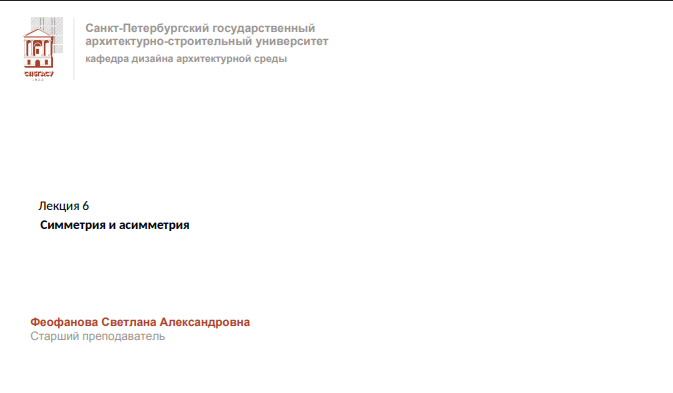
Вступительное слово: «Здравствуйте, уважаемые студенты. Мы с вами переходим к Лекции 6. Сегодня мы поговорим о фундаментальных законах композиции — симметрии и асимметрии».
Связь с профессией: «Для нас, как для будущих дизайнеров архитектурной среды, это не просто абстрактные математические понятия. Это базовые инструменты, с помощью которых создается визуальный порядок, гармония и эмоциональное воздействие зданий и пространств вокруг нас».
Анонс: «Мы посмотрим, как эти принципы работают в природе, искусстве, а затем перейдем непосредственно к архитектуре».
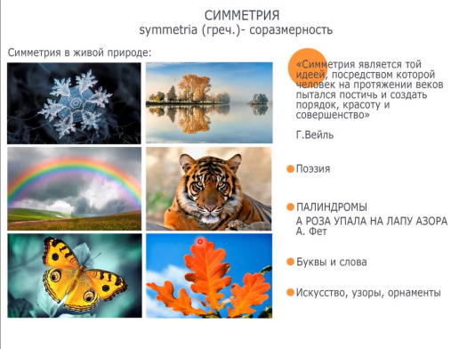
1. Введение в понятие: «Само слово "симметрия" происходит от греческого symmetria, что означает соразмерность, гармонию. Симметрия — это то, что нас окружает с самого рождения. Это закон, по которому устроен наш мир».
«Симметрия является той идеей, посредством которой человек на протяжении веков пытался постичь и создать порядок, красоту и совершенство». — Герман Вейль
«Для архитектора это ключевая мысль: симметрия создает ощущение стабильности, покоя и величия».
2. Симметрия в живой природе (на примере фото):
3. Симметрия в языке и искусстве:
4. Мост к архитектуре: «В архитектуре, как и в природе, симметрия дарит нам чувство надежности и упорядоченности. Именно поэтому классическая архитектура (Древняя Греция, Рим, Ренессанс) строилась на строгой симметрии. Она подчеркивает мощь, статус и вечность здания. А вот асимметрия, о которой мы поговорим позже, привносит в архитектуру динамику, движение и современность».
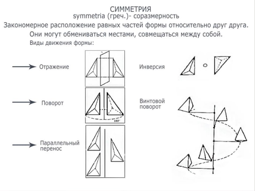
Вступительное слово (переход от прошлого слайда): «На прошлом слайде мы убедились, что симметрия — это универсальный закон гармонии. Но для архитектора и дизайнера недостаточно просто восхищаться симметрией в природе. Нам нужно понимать, каким именно геометрическим способом она достигается. Как математически создать идеальную форму?»
Разбор определения: «Обратите внимание на определение на слайде. Симметрия — это закономерное расположение равных частей формы относительно друг друга. Ключевые слова здесь — "закономерное" и "равные части". Это означает, что мы можем взять базовый элемент формы и с помощью определенных движений "размножить" его в пространстве. На слайде представлены пять базовых видов таких движений».
Разбор видов движения (с привязкой к архитектуре):
Вывод по слайду: «Все эти виды движения формы — это ваш "конструктор". Владея этими приемами, вы можете создавать бесконечное множество орнаментов, узоров, фасадных решений и планировок. В следующей части лекции мы посмотрим, как эти приемы комбинируются и что происходит, когда мы намеренно нарушаем эти закономерности (то есть переходим к асимметрии)».
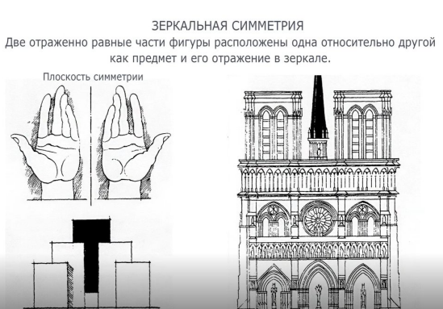
Вступление: «На предыдущем слайде мы разобрали пять видов движения формы. Первый и самый главный из них, с которого начинается любая архитектурная композиция — это Отражение, или Зеркальная симметрия».
Разбор определения: «Обратите внимание на определение. Две части фигуры расположены как предмет и его отражение в зеркале. Главный элемент здесь — это плоскость симметрии (та самая невидимая ось, которая делит форму пополам). Расстояние от любой точки формы до этой плоскости равно расстоянию от ее зеркального отражения».
Примеры на слайде:
Связь с архитектурой (Готический собор): «Справа мы видим фасад готического собора. Это классический пример монументальной зеркальной симметрии. Ось симметрии здесь проходит строго по центру — через главный портал и центральное окно-розу. Зачем зодчие использовали этот прием? Зеркальная симметрия — это язык власти, стабильности и абсолютного порядка. Она создает ощущение, что здание стоит нерушимо веками. Симметричный фасад как бы "смотрит" на зрителя, подчиняя его своей геометрии».
Вывод: «Зеркальная симметрия — это база. Но если использовать только ее, архитектура может стать слишком статичной и скучной. Именно поэтому в композиции всегда есть место для легкого нарушения этой идеальной зеркальности, о чем мы поговорим дальше».
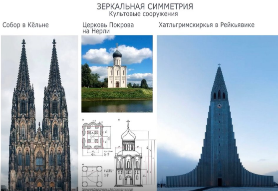
Вступление: «Мы с вами уже поняли, что зеркальная симметрия — это базовый закон гармонии. Но самое интересное начинается, когда мы смотрим, как этот математический закон проявляется в реальной архитектуре. На этом слайде представлены три культовых сооружения из разных стран и эпох. И везде работает один и тот же принцип — наличие центральной оси».
Разбор примеров:
Вывод по слайду: «Три разные эпохи, три разных материала (камень, известняк, бетон) и три разных стиля. Но объединяет их одно — использование зеркальной симметрии для создания сакрального, возвышенного пространства. Ось симметрии — это невидимый "хребет" здания, который держит всю его композицию».
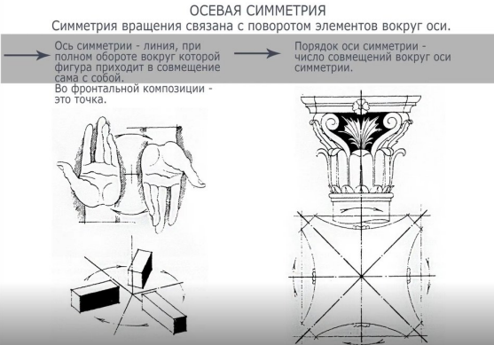
Вступление: «Мы с вами разобрали зеркальную симметрию, где форма отражается относительно плоскости. Теперь перейдем к следующему типу — осевой симметрии (ее еще часто называют поворотной или радиальной). Здесь работает не отражение, а вращение элементов вокруг невидимой оси».
Разбор определений:
Разбор схем на слайде:
Связь с архитектурой (Капитель): «Обратите внимание на правую часть слайда. Здесь изображена коринфская капитель (верхняя часть колонны). Это великолепный пример осевой симметрии в классической архитектуре. Посмотрите на геометрические построения внизу: ось проходит ровно по центру. Листья аканта и волюты (завитки) симметрично повторяются вокруг этой оси. В архитектуре осевая симметрия — это королева куполов, ротонд, колонн и винтовых лестниц. Она создает ощущение динамики, вращения и при этом абсолютного порядка. В отличие от статичной зеркальной симметрии, осевая добавляет композиции энергию и движение».
Вывод: «Когда мы смотрим на купол собора или на круглую башню, наше подсознание считывает эту геометрию вращения. Осевая симметрия позволяет зданию быть идеальным со всех сторон, а не только с главного фасада».
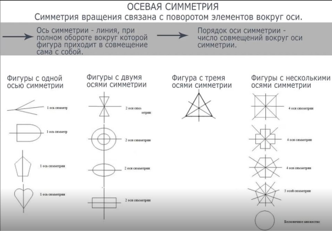
Вступление: «Мы с вами уже знаем, что ось симметрии — это линия, при повороте вокруг которой фигура совпадает сама с собой. Но у разных фигур количество таких осей может быть совершенно разным. И для архитектора это принципиально важный момент, потому что количество осей определяет, как здание будет "читаться" в пространстве».
Разбор схемы слева направо:
Вывод по слайду: «Анализируя план или фасад здания, всегда обращайте внимание на количество осей. Одна ось — это фасад, направленный на зрителя. Две оси — это прямоугольный объем. Множество осей — это центрическое сооружение. Количество осей симметрии — это мощнейший инструмент композиции, который задает сценарий восприятия вашего архитектурного объекта».
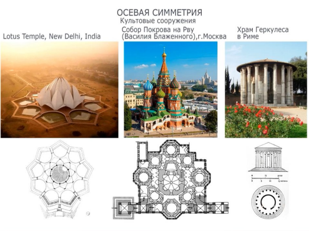
Вступление: «На предыдущем слайде мы разобрали, как количество осей симметрии влияет на форму. Теперь давайте посмотрим, как этот принцип реализуется в реальной архитектуре. Культовые сооружения — это идеальная площадка для демонстрации осевой (поворотной) симметрии, потому что религия всегда ищет абсолютный порядок и центр мироздания».
Разбор примеров (слева направо):
Вывод по слайду: «Обратите внимание: независимо от эпохи и стиля, архитекторы культовых сооружений используют осевую симметрию, чтобы создать ощущение сакрального центра. Будь то 9 осей Храма Лотоса или бесконечность ротонды Геркулеса, зритель всегда подсознательно находит эту невидимую ось и движется к центру композиции».
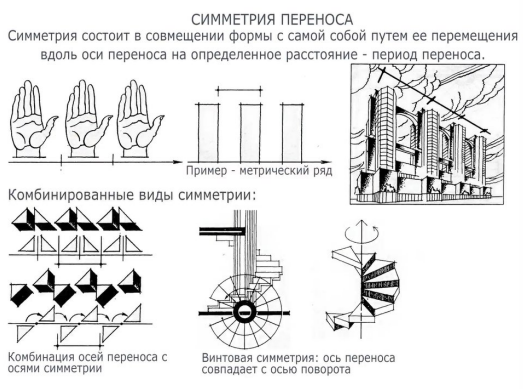
Вступление: «Мы с вами разобрали отражение (зеркало) и поворот (вращение). Остался третий базовый вид — симметрия переноса (или трансляция). Этот вид симметрии — абсолютный лидер по частоте использования в архитектуре. Он лежит в основе любого ритма».
Разбор определения (верхняя часть слайда): «Симметрия переноса заключается в том, что форма сдвигается вдоль некой оси на определенное расстояние. Это расстояние называется периодом переноса. Обратите внимание на схемы сверху: три ладони, три прямоугольника. Это так называемый метрический ряд — когда элементы повторяются через абсолютно равные промежутки. Справа показан фасад высотного здания: повторяющиеся эркеры или балконы — это классическая трансляция в архитектуре».
Комбинированные виды симметрии (нижняя часть слайда): «В чистом виде перенос встречается редко. Обычно он комбинируется с другими видами. На слайде показаны три таких комбинации»:
Вывод по слайду: «Симметрия переноса задает масштаб и ритм. Если вы проектируете длинный фасад, вы используете трансляцию окон или колонн. Если вы проектируете лестницу — вы используете винтовую симметрию. Это математическая основа для создания движения в статичной архитектуре».
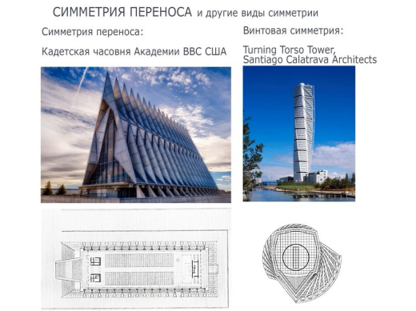
Вступление: «Мы с вами разобрали теорию: что такое перенос, и что такое винтовая симметрия. Теперь давайте посмотрим, как эти математические абстракции превращаются в потрясающие архитектурные шедевры. На этом слайде — два ярких примера современной архитектуры, где геометрия играет главную роль».
Разбор примеров:
Вывод по слайду: «Эти два здания показывают два разных подхода к движению в архитектуре. Часовня использует линейный перенос для создания статичного, но ритмичного порядка. А небоскреб Калатравы использует комбинированную (винтовую) симметрию для создания чистой динамики. Выбор того или иного вида симметрии — это всегда выбор характера здания».
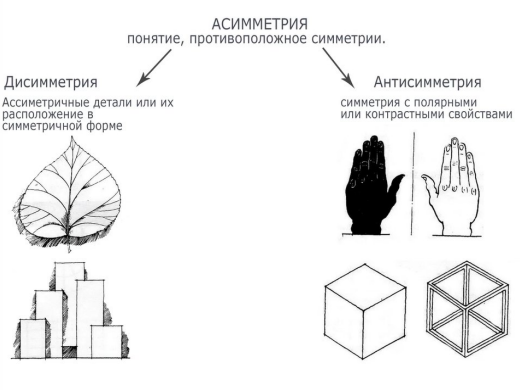
Вступление: «Мы с вами долго говорили о симметрии и пришли к выводу, что она создает ощущение покоя, стабильности и вечности. Но согласитесь, если весь мир будет состоять только из симметричных форм, он станет слишком предсказуемым и скучным. На смену идеальному порядку приходит асимметрия — понятие, противоположное симметрии. Но это не хаос, а сложная, живая гармония».
Разбор понятий (левая и правая части слайда):
Вывод по слайду: «Асимметрия нужна архитектору не для того, чтобы все сломать. Она нужна, чтобы управлять вниманием зрителя, подчеркивать функциональные зоны и создавать современные, динамичные образы. В следующих слайдах мы посмотрим, как великие архитекторы используют асимметрию в своих проектах».
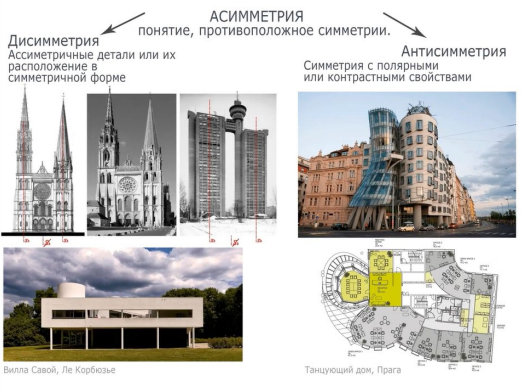
Вступление: «На прошлом слайде мы разобрали теорию. Теперь давайте посмотрим, как диссимметрия и антисимметрия работают в реальных зданиях. На этом слайде собраны очень разные примеры — от готики до современного деконструктивизма».
1. Диссимметрия: когда идеал недостижим или не нужен (левая часть):
2. Антисимметрия: игра на контрастах (правая часть):
Вывод по слайду: «Асимметрия — это не хаос. В архитектуре она бывает двух видов:
1. Диссимметрия — когда мы берем симметричную форму и немного ее "ломаем" деталями (как в готике или у Корбюзье).
2. Антисимметрия — когда мы противопоставляем друг другу контрастные объемы, создавая динамику (как в Танцующем доме). Умение работать с этими приемами отличает профессионального архитектора».
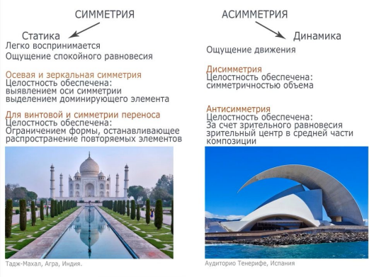
Вступление: «Мы с вами разобрали теорию и примеры. Теперь давайте подведем главный итог и ответим на вопрос: а зачем архитектору вообще нужно знать все эти математические тонкости? Ответ кроется в эмоциональном воздействии на человека. Симметрия и асимметрия — это два разных языка, на которых здание говорит со зрителем».
1. Симметрия — это Статика (Левая часть слайда):
2. Асимметрия — это Динамика (Правая часть слайда):
Вывод по слайду: «В дизайне архитектурной среды нет плохих или хороших приемов. Есть уместные. Если вы проектируете суд, банк или мемориал — вы будете использовать симметрию (статика, власть, вечность). Если вы проектируете современный музей, спортивный комплекс или креативное пространство — вы используете асимметрию (динамика, свобода, движение). Задача дизайнера — уметь виртуозно комбинировать оба эти языка».
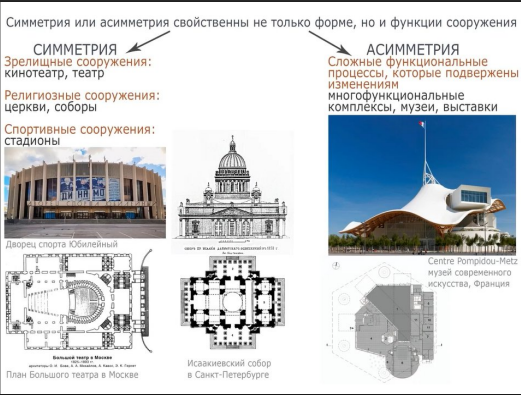
Вступление: «До этого момента мы говорили о форме. Но в архитектуре и дизайне среды работает золотое правило: "Форма следует за функцией". Симметрия или асимметрия — это не просто прихоть архитектора. Это прямое отражение того, что происходит внутри здания. На этом слайде показано, как функция диктует геометрию».
1. Симметрия (Левая часть слайда): Где она необходима?
2. Асимметрия (Правая часть слайда): Где она продиктована?
Вывод по слайду: «Запомните это как базовый алгоритм: прежде чем рисовать фасад, проанализируйте функциональные потоки. Если функция требует централизации, четкой иерархии и равного доступа (театр, стадион) — выбирайте симметрию. Если функция требует гибкости, разнообразия и многофункциональности (современный музей, торговый центр) — выбирайте асимметрию. Геометрия должна помогать функции, а не мешать ей».
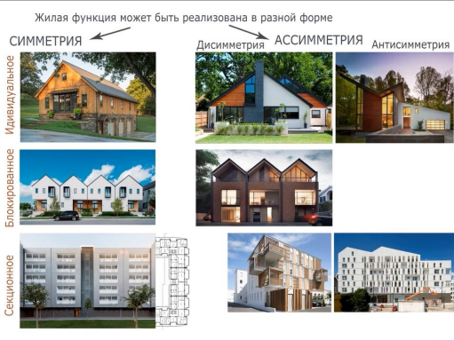
Вступление: «Мы с вами посмотрели на уникальные общественные и культовые здания. А теперь давайте спустимся на землю, к самой массовой архитектуре — к жилью. На этом слайде отлично видно, что жилая функция (то есть потребность людей в крыше над головой) может быть реализована в абсолютно любой форме. Архитектор не привязан к жестким религиозным или функциональным канонам и может использовать всю палитру приемов».
Разбор по строкам (типология жилья):
Вывод по слайду: «Главная мысль этого слайда: типология жилья не диктует нам жестко, какую симметрию использовать. Даже типовую многоэтажку можно сделать интересной, если грамотно применить законы антисимметрии или диссимметрии. Ваша задача как дизайнеров среды — находить баланс между экономичностью строительства и визуальной выразительностью».
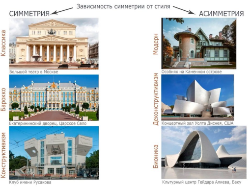
Вступление: «Архитектурный стиль — это не просто набор декоративных элементов. Это мировоззрение эпохи, ее философия. И то, как архитекторы используют симметрию или асимметрию, — это лучший индикатор стиля. На этом слайде показано, как менялась геометрия зданий в зависимости от исторической эпохи».
1. Симметрия (Левая колонка): торжество порядка
2. Асимметрия (Правая колонка): свобода и динамика
Вывод по слайду: «Каждый стиль выбирает свою геометрию. Классицизм и барокко тяготеют к симметрии, потому что говорят о порядке и власти. Модерн и современные стили выбирают асимметрию, потому что говорят о свободе, природе и постоянном движении. Ваш выбор геометрии — это ваш манифест».
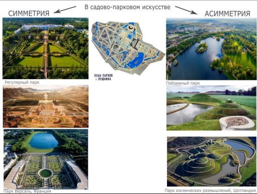
Вступление: «Мы с вами разобрали, как симметрия работает в отдельных зданиях. Но дизайн архитектурной среды не ограничивается стенами. Архитектор работает с пространством, и самый яркий пример этого — садово-парковое искусство. Здесь мы видим ту же самую битву двух философий: желание человека подчинить природу (симметрия) против желания слиться с ней (асимметрия)».
1. Симметрия: Регулярный парк (Левая часть слайда)
2. Асимметрия: Пейзажный парк (Правая часть слайда)
Вывод по слайду: «В ландшафтном дизайне выбор между симметрией и асимметрией — это выбор сценария поведения человека. Регулярный парк задает четкий маршрут, он церемониален. Пейзажный парк предлагает зрителю заблудиться, отдохнуть от городской суеты и почувствовать себя частью природы. Оба принципа активно используются и в современном городском озеленении».
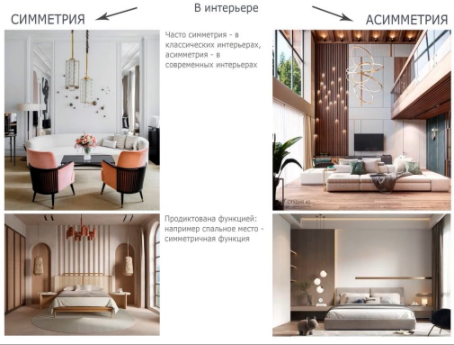
Вступление: «Мы с вами вышли из внешнего пространства и зашли внутрь. Интерьер — это та среда, с которой человек взаимодействует ежедневно и ежечасно. И здесь законы симметрии и асимметрии работают не хуже, чем на фасадах зданий. Они напрямую влияют на наше психологическое состояние. На этом слайде наглядно показано, как эти два подхода формируют разные сценарии жизни».
1. Симметрия в интерьере (Левая колонка): «Как написано в центре слайда: "Часто симметрия — в классических интерьерах"».
2. Асимметрия в интерьере (Правая колонка): «А вот современные интерьеры все чаще тяготеют к асимметрии».
Вывод по слайду: «В дизайне интерьеров правило простое: если вы проектируете зону, где важна стабильность, ритуал и равенство (спальня, обеденный стол, ванная комната) — используйте симметрию. Если вы проектируете зону для отдыха, творчества и движения (гостиная, детская, холл) — используйте асимметрию. И помните: в современном интерьере часто используют смешанный прием — симметричный "каркас" (например, стены) и асимметричное наполнение (мебель и декор). Это дает баланс между порядком и свободой».
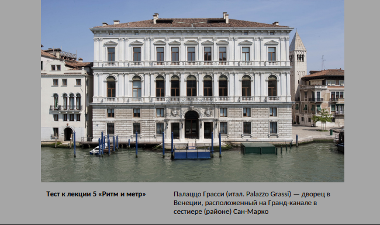
Вступление: «А теперь давайте немного отвлечемся и проверим, как вы усвоили материал предыдущей лекции, которая была посвящена ритму и метру. Перед вами знаменитое Палаццо Грасси в Венеции. Оно расположено прямо на Гранд-канале. Внимательно посмотрите на его фасад и давайте вместе проанализируем его с точки зрения композиции».
Связь с текущей темой (Симметрия): «Первое, что бросается в глаза — это, конечно же, строгая зеркальная симметрия. Ось проходит идеально по центру здания, через главный вход. Левая и правая части фасада являются точным отражением друг друга. Это создает ощущение монументальности и классического порядка».
Разбор ритма и метра (Тест): «Но давайте посмотрим, как здесь работает симметрия переноса.
• Обратите внимание на окна. На каждом этаже они расположены через абсолютно равные промежутки. Это ярчайший пример метрического ряда.
• Повторяющиеся элементы (окна с наличниками, пилястры между ними) создают четкий линейный ритм.
• При этом, несмотря на то, что окна повторяются (трансляция), архитекторы добавили иерархию: центральные окна на втором (главном) этаже — арочные и более массивные, а крайние — прямоугольные. Это нарушает скучный метр, добавляя фасаду живости, но не разрушает общую симметрию».
Вывод по слайду: «Палаццо Грасси — это блестящий пример того, как симметрия (общая форма) и метр с ритмом (членение этой формы на детали) работают в тандеме. Венецианские зодчие использовали эти математические приемы, чтобы подчеркнуть богатство и статус владельцев дворца.
Кто из вас готов ответить: если бы мы убрали симметрию, но оставили ритм, как бы изменилось восприятие этого здания?»
Архитектурная тектоника и конструктивные системы
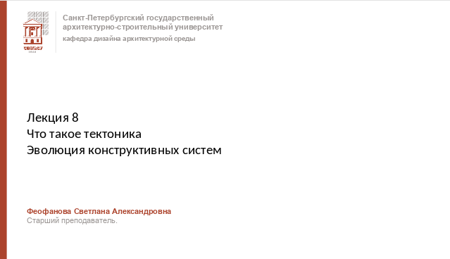
Вступление: «Здравствуйте, коллеги. Мы с вами закончили тему композиции и переходим к Лекции 8. Сегодня мы поговорим о том, без чего не может существовать ни одна постройка — о тектонике и конструктивных системах».
Связь с профессией: «Для дизайнера архитектурной среды понимание тектоники критически важно. Вы не просто рисуете красивые фасады. Вы должны чувствовать, как работает конструкция внутри. Тектоника — это правдивость архитектуры. Здание должно честно показывать, как оно устроено: где несущие стены, где балки, а где просто декоративный элемент. Если архитектура обманывает зрителя, она теряет свою эстетическую силу».
Анонс: «Мы проследим, как менялись конструктивные системы от Древнего мира до наших дней, и увидим, как появление новых материалов (железобетона, стали, стекла) полностью меняло облик городов».
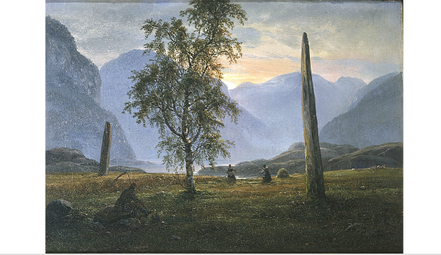
Вступление: «Прежде чем говорить о сложных конструктивных системах — арках, куполах и современных фермах, давайте вернемся в самое начало. Перед нами картина, напоминающая работы художников-романтиков. На фоне величественных гор мы видим два огромных вертикально вкопанных камня и дерево. Как это связано с тектоникой?»
Первый конструктивный элемент: «Эти камни называются мегалитами (менгирами). Это один из первых шагов человечества в архитектуре. По сути, это **прообраз колонны**. Человек взял тяжелый материал (камень) и поставил его вертикально. Зачем? Чтобы противостоять силе гравитации. Это рождение главного тектонического принципа — работы элемента на сжатие. Камень просто стоит под собственным весом, передавая нагрузку в землю».
Связь с природой: «Обратите внимание на дерево в центре композиции. Природа сама подсказала архитектору этот принцип. Ствол дерева — это идеальная природная колонна, которая держит крону. Человек лишь повторил эту вертикаль в камне. В этих грубых камнях уже есть тектоника — правдивое выражение работы материала. Камень выглядит тяжелым, и он действительно несет вес».
От мегалита к античности: «С этих неотесанных глыб начнется долгий путь эволюции конструкций. Древние греки обработают этот камень, придадут ему пропорции и создадут ордер — идеальную стоечно-балочную систему. Но суть останется той же: вертикальная опора (стойка) и горизонтальный элемент, который она держит (балка)».
Вывод по слайду: «Вся история архитектуры — это история борьбы с силой тяжести. И начинается она вот с таких простых вертикальных форм. Следующий шаг — это когда мы кладем камень на два таких столба сверху».
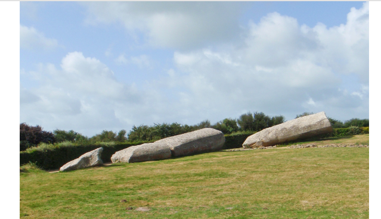
Вступление: «На прошлом слайде мы с вами видели вертикально стоящие камни — прообразы колонн. А теперь посмотрите на этот кадр. Мы видим гигантские каменные блоки, лежащие горизонтально на земле. Это поваленные или намеренно сломанные древние мегалиты. Что же случилось?»
Проблема одиночной опоры: «Одиночный вертикальный камень, каким бы огромным он ни был, крайне неустойчив. Сила ветра, эрозия почвы или землетрясение легко могут его опрокинуть. Падение — это единственный способ, которым камень может противостоять силе, действующей на него сбоку. В этот момент он начинает работать на изгиб».
Новый тектонический элемент: «Но в архитектуре падение — это не всегда конец. Это начало нового приема. Когда камень лежит горизонтально, он превращается из опоры в балку (или перекладину). Если мы поставим два таких вертикальных камня и сверху положим третий горизонтальный — мы получим первую в истории человечества стоечно-балочную конструкцию».
Тектоника камня: «Важно понимать главное свойство камня как материала. Камень прекрасно работает на сжатие (когда его давят сверху). Поэтому из него делают отличные колонны. Но камень очень плохо работает на изгиб (когда его пытаются согнуть). Если положить длинный каменный блок на две опоры, он либо выдержит только свой собственный вес, либо треснет посередине. Именно поэтому в древности пролеты между колоннами были такими маленькими. Эти лежащие гиганты на фотографии наглядно показывают нам, что такое масса и гравитация».
Вывод по слайду: «История архитектуры — это поиск материалов и форм, которые позволят перекрывать большие пространства. Камень ограничивал нас. Понадобятся тысячелетия, чтобы изобрести деревянные фермы, а затем бетон и сталь, которые позволят балкам "парить" в воздухе. Но начало всему — вот эти горизонтальные линии».
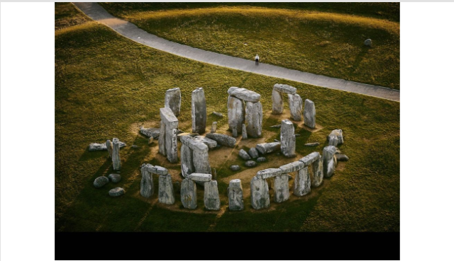
Вступление: «Мы с вами видели одиночные камни и упавшие блоки. А теперь посмотрим на вершину мегалитической архитектуры — Стоунхендж в Англии. Перед нами не просто груда камней, а сложнейшая тектоническая система, которая стоит уже почти 5000 лет».
Анализ конструкции: «Рассмотрите внимательно структуру. Это классическая стоечно-балочная система.
• Вертикальные камни (опоры, стойки) несут на себе всю нагрузку.
• Горизонтальные камни сверху (перекладины, балки) связывают эти опоры и создают жесткость.
Такой элемент из двух вертикалей и одной горизонтали называется трилитом. Соединяя трилиты в круг, древние зодчие создали первое в истории кольцевое перекрытие».
Тектоника и предел материала: «Обратите внимание на пропорции. Горизонтальные камни (балки) довольно короткие. Почему? Потому что камень, как мы уже говорили, отлично работает на сжатие (когда его давят сверху), но очень плохо на изгиб. Если положить слишком длинный камень на две опоры, он сломается под собственным весом. Древние строители это прекрасно понимали, поэтому пролеты между опорами минимальны.
Кроме того, архитекторы Стоунхенджа использовали сложные соединения — «шип и паз» (пазы вырублены в горизонтальных камнях, а шипы — на вертикальных). Это говорит о высоком уровне понимания конструктивной логики».
Художественный образ: «В тектонике важна не только прочность, но и то, как это выглядит. Грубая, неотесанная поверхность камней подчеркивает их первозданную мощь. Стоунхендж — это суровая, мегалитическая тектоника. Он не пытается казаться легким. Он тяжелый, приземистый и вечный».
Вывод по слайду: «Стоунхендж — это прототип всех будущих храмов. Пройдет время, и греки возьмут этот же принцип (две стойки + балка), но сделают его изящным. Они превратят этот суровый каменный лес в стройные колоннады Парфенона. Но суть конструкции останется той же».
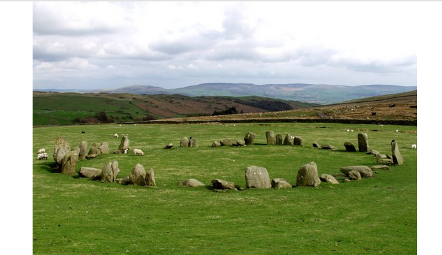
Вступление: «Мы с вами посмотрели на Стоунхендж, где камни работают как несущая конструкция — колонны и балки. А теперь взгляните на этот пейзаж. Перед нами другой тип мегалитического сооружения — каменный круг (кромлех). На первый взгляд, это просто нагромождение валунов, но для истории архитектуры это принципиально иной шаг».
От вертикали к пространству: «В отличие от менгиров, которые "работали" на вертикаль, и трилитов Стоунхенджа, которые создавали перекрытие, эти камни создают горизонтальную границу. Они не несут на себе вес крыши. Они очерчивают пространство. Это первый в истории человечества опыт зонирования территории. Архитектура здесь перестает быть просто объектом и становится средой».
Тектоника и материал: «Обратите внимание на то, как лежат камни. Многие из них упали или наклонились. Почему? Потому что у них нет того сложного фундамента и точных соединений (шип-паз), которые мы видели в Стоунхендже. Это показывает эволюцию тектоники: чтобы камень стоял веками, недостаточно просто вкопать его в землю. Нужен расчет нагрузок и связей между элементами. Здесь мы видим предел возможностей грубого необработанного материала».
Связь с природой и ландшафтом: «Также обратите внимание на контекст. Круг вписан в природный ландшафт — холмы, пастбища с овцами. Древние зодчие не пытались противопоставить архитектуру природе (как это будет позже в классицизме). Они создавали форму, которая резонирует с природой, очерчивая на земле священный круг».
Вывод по слайду: «Этот слайд показывает нам важнейший тектонический принцип: архитектура — это не только то, что держит крышу. Это еще и умение организовать пространство. Камень здесь выполняет функцию стены, но стены не несущей, а символической и ограждающей. С этого момента архитектура начинает формировать среду обитания человека».
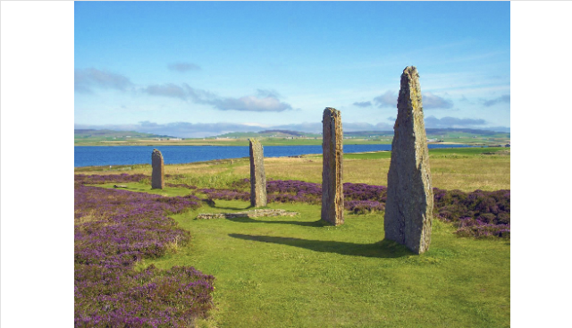
Вступление: «Мы с вами проследили, как древние люди осваивали вертикаль (менгиры) и горизонталь (Стоунхендж). А теперь посмотрите на этот величественный пейзаж. Перед нами ряд менгиров, выстроенных в линию. Для архитектуры это момент колоссального прорыва».
Тектоника линейного ряда: «Обратите внимание: эти камни не несут на себе никакой перекладины. Они не держат крышу. Но вместе они создают то, что мы называем тектоническим ритмом. Пространство между камнями начинает работать так же сильно, как и сами камни. Это первый шаг к созданию колоннады».
Появление оси и движение: «Выстроенные в линию камни создают ось. В архитектуре ось — это направление движения. Древние люди шли вдоль этой аллеи (возможно, это был ритуальный путь). Архитектура перестала быть точкой на карте и стала маршрутом.
Позже этот прием разовьют египтяне в своих храмах (гипостильные залы), а греки — в колоннадах периптеров. Но истоки — здесь, в этих суровых северных пейзажах».
Масштаб и пропорции: «Взгляните на то, как камни соотносятся с пейзажем. Они задают масштаб. Человек, стоящий рядом с ними, кажется крошечным. Тектоника этих камней правдива: они тяжелые, они глубоко врыты в землю. Их валунная, неровная фактура контрастирует с мягкой травой и небом. Это классический пример того, как архитектурный элемент формирует ландшафт».
Вывод по слайду: «Тектоника — это не только про то, как здание стоит. Это еще и про то, как оно направляет человека. Ряд вертикальных опор — это универсальный язык архитектуры. От этих древних аллей мы перейдем к античным храмам с их совершенными ордерами. В основе их лежит тот же принцип: повторяющийся ритм вертикалей, который организует пространство».
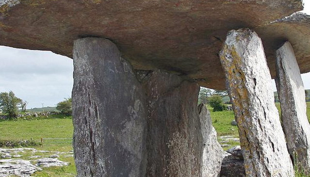
Вступление: «На прошлом слайде мы видели ряд камней, которые организовывали пространство, но не имели перекрытия. А теперь мы видим следующий, колоссальный шаг в эволюции тектоники. Перед нами дольмен (вероятно, Пулнаброн в Ирландии). Это первый опыт создания замкнутого, перекрытого пространства».
Чистая тектоника: «Посмотрите на эту конструкцию. Это абсолютная, кристально чистая стоечно-балочная система. Несколько вертикальных каменных опор (стоек) держат гигантскую горизонтальную каменную плиту (балку или перекрытие). Здесь нет никаких декоративных элементов, нет ничего лишнего. Тектоника здесь максимально обнажена: форма предельно честно показывает, как распределяется вес».
Проблема материала и тектоника: «Обратите внимание, насколько массивна верхняя плита. Почему она такая огромная? Как мы уже говорили, камень плохо работает на изгиб. Чтобы перекрыть даже небольшой пролет между опорами, древние строители были вынуждены использовать колоссальный по весу камень, чтобы он не треснул под собственной тяжестью.
Это классический пример того, как материал диктует форму. Архитектор не мог сделать крышу тонкой и изящной, потому что в его распоряжении был только грубый камень. Тектоника этого сооружения — тяжелая, давящая, первобытная».
Появление интерьера: «Но самое главное, что здесь происходит — это появление интерьера. Человек впервые создает для себя искусственную пещеру. Пространство внутри дольмена отделяет человека от внешней среды (дождя, ветра, солнца). С этого момента архитектура начинает работать с объемом, а не только с плоской фасадной стеной».
Вывод по слайду: «Дольмен — это прямой предок греческого храма и современного небоскреба. Суть конструкции осталась той же: опоры и перекрытие. Но человечество будет веками искать способы сделать эту конструкцию более легкой и изящной, изобретая новые материалы».
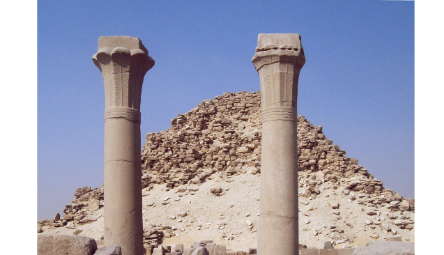
Вступление: «Мы с вами покидаем доисторические времена и переносимся в Древний Египет. На заднем плане мы видим ступенчатую пирамиду Джосера — это чистая масса камня, гигантская гора, созданная человеком. Но на переднем плане происходит нечто более важное для эволюции конструкций — мы видим колонны».
От валуна к архитектурной форме: «Сравните эти колонны с теми неотесанными камнями, которые мы видели ранее. Здесь камень обрел форму. У колонны есть четкое основание, ствол и капитель (верхняя часть). Обратите внимание, что ствол колонны сужается кверху. Это не просто прихоть художника, это гениальное конструктивное решение. Сужение (энтазис) визуально облегчает конструкцию и распределяет нагрузку от тяжелого перекрытия более равномерно».
Тектоника материала (Имитация): «Присмотритесь к капители. Она напоминает связку стеблей папируса или лотоса. Древние египтяне изначально строили из тростника и дерева. Когда они научились обрабатывать камень, они перенесли в камень формы, привычные для дерева. В этом заключается важнейший принцип тектоники: камень имитирует работу дерева, но приобретает свою монументальность. Вертикальные борозды (каннелюры) на стволе тоже подчеркивают эту связку стеблей и визуально "натягивают" колонну вверх».
Связь с пирамидой: «Обратите внимание на контраст. Пирамида — это тектоника массивной стены, которая работает только на сжатие. Колонна — это уже тектоника каркаса. Она создает пролет. Египтяне первыми поняли, что можно создать огромное пространство внутри храма, если поставить в ряд много таких опор (это позже назовут гипостильным залом). Впоследствии греки доведут эту форму до идеала, создав классический ордер».
Вывод по слайду: «Эти две колонны — прародители всей мировой архитектуры. Именно здесь, в Древнем Египте, человек перестал просто складывать камни и начал создавать архитектурный элемент с собственными пропорциями, логикой и художественным образом».
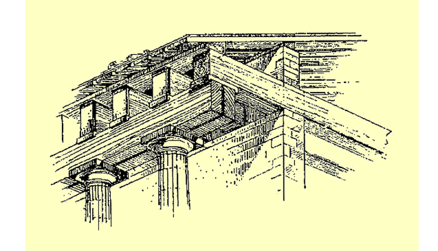
Вступление: «Мы с вами посмотрели на египетские колонны. Но колонна — это лишь опора. А как устроена сама крыша? На этом чертеже-аксонометрии показан "скелет" древнего храма. И здесь мы видим важнейший тектонический принцип: разделение работы материалов».
Анализ конструкции: «Посмотрите внимательно на чертеж. Внизу — массивные каменные колонны. Они работают на сжатие, передавая огромный вес вниз, на фундамент. На них лежит горизонтальный каменный блок (архитрав). А вот дальше начинается самое интересное. Выше каменного блока мы видим сложную систему наклонных и горизонтальных балок. Это деревянные конструкции».
Почему именно дерево? «Зачем древние зодчие использовали дерево для крыши, а не камень? Ответ кроется в физике. Если бы они попытались сделать двускатную крышу из камня, она бы обрушилась под собственным весом. Камень плохо работает на изгиб. А дерево — это идеальный материал для перекрытий и стропил. Оно легкое и отлично сопротивляется изгибающим нагрузкам.
Мы видим классическую стропильную систему: наклонные балки (стропила) поддерживают кровлю, а горизонтальные элементы (затяжки) не дают крыше "разъехаться" в стороны».
Тектоника и гармония: «В чем же здесь гениальность? В том, что архитекторы древности научились комбинировать материалы, используя их сильные стороны. Камень дает монументальность, долговечность и создает образ. Дерево дает легкость и позволяет перекрыть большое пространство.
Когда вы смотрите на такой храм снаружи (на фасад), вы видите только каменные колонны и фронтон. Но вы знаете, что внутри, за каменной оболочкой, скрывается сложный деревянный каркас, который держит всю эту красоту».
Вывод по слайду: «Этот чертеж — наглядный урок для каждого дизайнера. Настоящая тектоника — это не просто красивая картинка. Это честная работа конструкции. Материалы должны работать там, где они сильны: камень на сжатие, дерево на изгиб. Позже, когда люди изобретут бетон и сталь, они смогут объединить эти свойства, но принцип останется тем же — каждый элемент делает свою работу».
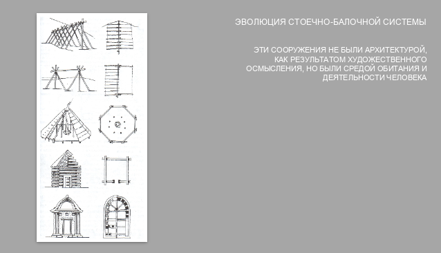
Вступление: «На этом слайде мы видим наглядную схему, которая показывает, как развивалась архитектура от простейших форм до античного храма. Слева представлена эволюция тектонических форм, а справа — важнейшая философская мысль, которую нужно усвоить каждому архитектору».
Разбор эволюции (левая часть): «Давайте проследим этот путь сверху вниз.
• Сначала — примитивные шалаши и палатки (жерди, покрытые шкурами).
• Затем — деревянные срубы, где человек учится складывать бревна в жесткую клетку.
• Далее — ложные купола (например, гробница Атрея в Микенах), где камни нависают друг над другом.
• И наконец — классический греческий храм с его колоннами и фронтоном.
Обратите внимание, как меняется форма, но остается неизменным главный принцип: вертикальная опора и горизонтальное перекрытие».
Философский смысл (правая часть): «А теперь прочитаем текст справа. «Эти сооружения не были архитектурой, как результатом художественного осмысления, но были средой обитания и деятельности человека».
Что это значит? Первобытный человек не думал о красоте, когда строил шалаш. Он думал о безопасности и тепле. Его главной задачей было выжить. Первые постройки были чисто утилитарными. Но именно решая практические задачи (как сделать, чтобы крыша не упала), человек постепенно находил гармонию и пропорции. Тектоника зародилась как чистая функция».
Связь с профессией: «Почему это важно для дизайнера среды? Потому что настоящая архитектура всегда рождается из синтеза пользы и красоты. Греческий храм кажется нам произведением искусства, но по сути своей он — потомок деревянного сруба. Греки просто взяли примитивную деревянную конструкцию, перевели ее в камень и довели до идеала».
Вывод по слайду: «Архитектура начинается с необходимости. Но она становится великой, когда человек начинает осмыслять эту необходимость эстетически. От шалаша до Парфенона — это путь поиска правдивой и красивой конструкции».
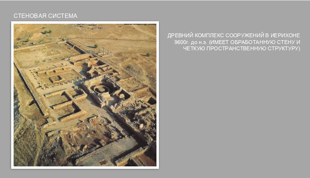
Вступление: «Мы с вами долго говорили о стоечно-балочной системе, где нагрузка передается через отдельные точки (колонны). Но в истории архитектуры существовал и другой, не менее важный путь. Перед нами древний комплекс в Иерихоне (около 9600 г. до н.э.). Это один из первых городов в истории человечества, и здесь мы видим рождение стеновой системы».
Что такое стеновая система? «В отличие от каркаса, где пространство между опорами свободно, здесь нагрузка от перекрытий и крыши передается непрерывно по всей плоскости стены. Стена становится главным несущим и ограждающим элементом. Обратите внимание на текст на слайде: упоминается «обработанная стена и четкая пространственная структура». Это значит, что люди уже не просто складывали камни хаотично. Они создавали геометрически правильные объемы, планировали помещения».
Тектоника сырцового кирпича: «На фотографии мы видим руины построек из сырцового кирпича (глина с соломой, высушенная на солнце) и камня. Этот материал отлично работает на сжатие (как и камень), но боится влаги. Поэтому стены делали массивными, толщина некоторых достигала нескольких метров. Тектоника здесь монолитная: здание — это тяжелая, плотная масса, которая держит сама себя».
Пространственный смысл: «Появление стеновой системы — это гигантский шаг для цивилизации. Стена отделила внутреннее, безопасное пространство от внешнего, полного угроз. В Иерихоне мы видим не просто жилища, а мощную оборонительную стену и башню. Архитектура начинает решать задачи фортификации (защиты) и урбанизма (организации города)».
Вывод по слайду: «Стеновая система — это альтернатива стоечно-балочной. Если каркас позволяет создать огромные открытые залы (как в храмах), то стеновая система создает уютные, изолированные ячейки (жилые дома, крепости). В дальнейшем архитектура будет виртуозно комбинировать оба этих подхода».
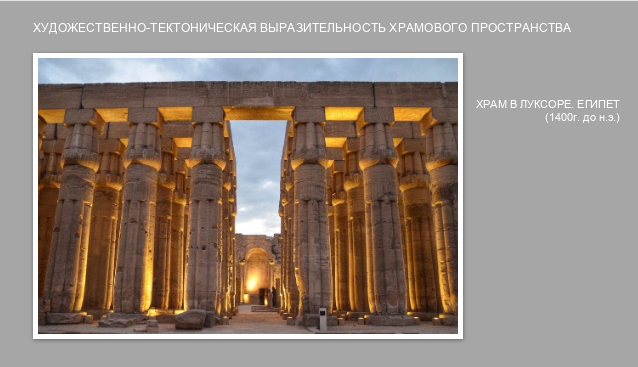
Вступление: «Мы с вами вернулись от массивных стен Иерихона к стоечно-балочной системе. Но теперь мы видим ее на совершенно новом уровне. Перед нами гипостильный зал (зал с множеством колонн) Луксорского храма в Египте, построенный около 1400 года до н.э. На этом примере мы можем понять, что такое художественно-тектоническая выразительность».
Конструктивная честность: «Посмотрите на эти колонны. Они стоят очень близко друг к другу. Это не случайно и не для красоты. Как мы уже говорили, каменные балки, которые лежат сверху, не могут перекрывать большие пролеты — они треснут. Поэтому египтяне были вынуждены ставить колонны плотно. Конструкция здесь предельно честна: она диктует форму пространства».
Рождение образа "Каменного леса": «Но зачем делать их такими гигантскими? Обратите внимание на фигурку человека внизу (для масштаба). Колонны подавляют человека своим размером. Такая тектоника создает совершенно особое, сакральное пространство. Когда египтянин заходил в этот зал, он попадал в "каменный лес". Свет, падающий сверху через специальные проемы (клинописные окна), создавал драматическую игру света и тени. Тектоника колонн работает здесь как идеологическое и религиозное оружие — она подчеркивает мощь фараона и богов».
Тектоника формы: «Обратите внимание на капители (верхушки) колонн. Они расширяются кверху, как раскрывающиеся цветы лотоса или папируса. Это не просто декор, это попытка визуально связать каменную опору с землей и небом. Кроме того, массивная горизонтальная балка (архитрав) сверху визуально "замыкает" пространство, делая его стабильным и вечным».
Вывод по слайду: «Луксорский храм — это блестящий пример того, как инженерная необходимость (ставить колонны близко) превращается в мощнейший художественный образ. Тектоника — это язык, на котором здание говорит с нами. Здесь оно говорит: "Я огромно, я вечно, я создано для богов"».
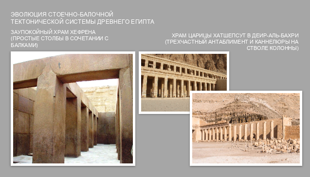
Вступление: «На прошлом слайде мы видели гигантский "каменный лес" Луксора. Но египетская архитектура не стояла на месте. На этом слайде представлены три памятника, которые показывают нам эволюцию тектоники: как от простых и грубых форм зодчие пришли к изяществу, которое позже позаимствуют греки».
1. Заупокойный храм Хефрена (Слева): «Начнем с самого древнего. Перед нами храм Хефрена. Обратите внимание на его опоры — это простые, массивные квадратные столбы. Здесь нет никаких капителей или декора. Тектоника предельно утилитарна: столб просто держит тяжелую каменную балку. Но именно в этой суровой простоте рождается ощущение невероятной мощи и первозданной надежности».
2. Храм Хатшепсут в Дейр-эль-Бахри (В центре): «А теперь посмотрим на храм царицы Хатшепсут. Это совершенно другой уровень. Во-первых, архитектор Сенмут (он кстати тоже разрушил пару стереотипов о женщинах-фараонах) использует каннелюры. Это вертикальные желобки на стволе колонны. Они не только облегчают визуально колонну, но и подчеркивают ее устремленность вверх. Это прямой предшественник греческого ордера.
Во-вторых, обратите внимание на текст: "трехчастный антаблемент". Вместо одной каменной балки здесь их несколько, разделенных по высоте. Это делает конструкцию визуально более легкой и изящной. Египтяне научились гармонизировать пропорции».
3. Связь с ландшафтом (Справа): «И третий кадр справа показывает храм Хатшепсут целиком. Заметьте, как он вписан в скалы. Его террасы, соединенные пандусами, буквально вырастают из камня. Это гениальный пример ландшафтной тектоники. Здание не спорит с природой, а продолжает ее. Колоннады здесь задают строгий горизонтальный ритм, который контрастирует с хаотичной фактурой скал».
Вывод по слайду: «Эволюция египетских конструкций — это путь от массы к каркасу, от простого столба к изящной колонне. Пройдет еще немного времени, и греки доведут этот принцип до абсолютного совершенства, создав величайшие храмы Античности. Но фундамент тектоники был заложен здесь, в долине Нила».
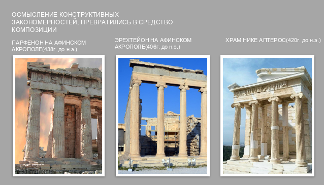
Вступление: «На предыдущих слайдах мы видели, как египтяне методом проб и ошибок осваивали вертикальные опоры и горизонтальные перекрытия. Они создали стоечно-балочную систему, но их тектоника была тяжелой и давящей. А теперь посмотрите на этот слайд. Древние греки совершили гениальное открытие: они осмыслили конструктивные закономерности и превратили их в средство композиции. Так родился ордер».
Что такое ордер? «Ордер — это не просто колонны и балки. Это строгая математическая система пропорций, где каждая деталь (от основания колонны до украшения фронтона) связана с другими. В основе ордера лежит всё та же честная конструкция: мы видим, как вертикальные опоры несут горизонтальное перекрытие. Но греки добавили к этому художественную логику. Колонна работает как опора, но она выглядит как произведение искусства».
Разбор примеров (слева направо):
Тектоника и оптические иллюзии: «Греки были гениальными психологами. Они понимали, что идеально прямая линия человеческому глазу может показаться вогнутой. Поэтому они использовали оптические поправки (курватуры). Например, в Парфеноне стилобат (основание) слегка выгнут вверх, а колонны наклонены внутрь. Это делает здание визуально абсолютно прямым и совершенным».
Вывод по слайду: «Греческий ордер — это величайшее достижение античной архитектуры. Греки доказали, что конструкция может быть красивой. Стоечно-балочная система, пройдя путь от неотесанного камня до Парфенона, обрела абсолютную гармонию. Именно поэтому ордер станет языком архитектуры на следующие 2000 лет».
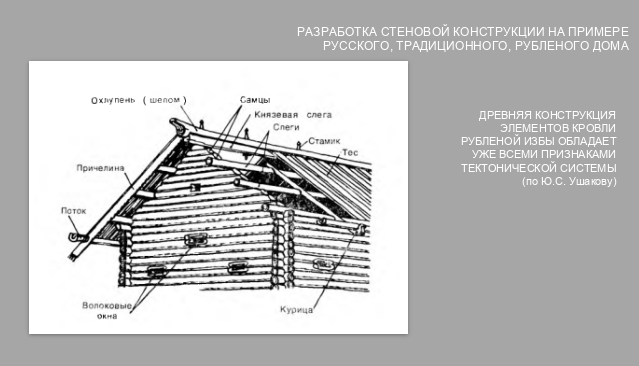
Вступление: «Мы с вами долго говорили о камне. Но на Руси главным строительным материалом всегда было дерево. Перед нами классический разрез традиционной рубленой избы. И, как гласит текст на слайде (цитата по Ю.С. Ушакову), эта древняя конструкция «обладает уже всеми признаками тектонической системы». Давайте разберемся, почему это так».
Стеновая система из дерева (Сруб): «В отличие от каменных храмов с их колоннами, здесь работает стеновая система. Несущей конструкцией является сам сруб — стены, сложенные из горизонтально уложенных бревен. Каждый венец (ряд бревен) скрепляется с предыдущим с помощью специальных врубок. Этот метод называется "в обло" или "в лапу". Дерево работает на сжатие, и стена сама держит крышу».
Гениальность деревянной кровли (Разбор деталей): «Самое интересное скрыто наверху. Посмотрите на крышу. Это безгвоздевая конструкция, где всё держится за счет гравитации и точной геометрии.
• Самцы: Это треугольные фронтоны из бревен, на которые опирается вся крыша.
• Курица и Поток: Обратите внимание на эти названия. "Курица" — это выгнутый корень ели, который держит "Поток" (деревянный желоб для отвода воды). Почему корень? Потому что он имеет естественный изгиб и не боится влаги. Архитектор не пилил дерево, а использовал его природную форму.
• Слеги и Тес: Это продольные балки и доски кровли. Вся эта система — идеальный пример тектоники, где материал (дерево) диктует форму».
Эстетика, рожденная конструкцией: «Почему такая изба кажется нам красивой? Потому что в ней нет обмана. Мы видим, как она стоит. Обратите внимание на Охлупень (шелом) — это бревно, венчающее крышу. Изначально оно закрывало стык досок от дождя (чисто утилитарная функция), но со временем ему начали придавать форму коня. Тектоника конструкции (защита от влаги) превратилась в главный художественный символ дома».
Вывод по слайду: «Русская изба — это шедевр народной тектоники. Она доказывает, что архитектура не требует мрамора и колонн, чтобы быть великой. Достаточно взять бревно, понять его свойства и сложить его так, чтобы было тепло, надежно и красиво. В этой простоте и заключается настоящая гармония».
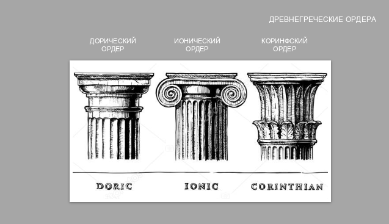
Вступление: «Мы с вами уже поняли, что греки превратили стоечно-балочную систему в высокое искусство. На этом слайде представлены три главных ордера (или ордера) Древней Греции. Если вы посмотрите на фасад здания, то первое, что бросается в глаза — это капитель (верхняя часть колонны). Именно она является главным отличительным признаком каждого ордера и его тектоническим паспортом».
Разбор ордеров:
Тектонический смысл: «Зачем архитектору нужны были три разных ордера? Потому что это был его язык общения. С помощью дорики можно было сказать: "Это здание суровое и надежное, как военный лагерь". С помощью коринфского ордера можно было сказать: "Это храм роскошный и богатый". Выбор ордера — это выбор интонации, с которой здание говорит со зрителем».
Вывод по слайду: «Все три ордера построены на одном и том же конструктивном принципе — вертикальной опоре, несущей горизонтальную балку. Но за счет изменения пропорций и декоративной обработки капители, мы получаем три совершенно разных образа. Это блестящий урок для дизайнера: детали решают всё».
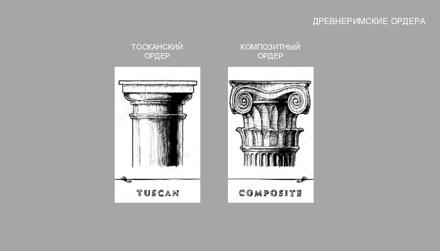
Вступление: «Мы с вами разобрали три классических греческих ордера. Древние римляне, завоевав Грецию, были настолько восхищены их архитектурой, что переняли ордерную систему. Но римляне были не просто копировальщиками, они были гениальными инженерами и прагматиками. Они видоизменили греческие ордера под свои нужды и создали два новых. На этом слайде представлены два римских ордера, которые показывают две крайности: от предельной простоты до запредельной роскоши».
Разбор ордеров:
Римское инженерное чудо (Важный контекст): «Но самое главное, что нужно знать о римских ордерах — они перестали быть единственной несущей конструкцией. Если у греков колонна реально держала крышу, то у римлян, благодаря изобретению бетона и арок, несущую функцию взяли на себя массивные стены и арки. Колонны же превратились в декоративный элемент, приставленный к стене (полуколонны или пилястры). Римляне использовали ордер как костюм, который надевали на прочное бетонное тело здания».
Вывод по слайду: «Римляне сделали архитектуру более прагматичной. Тосканский ордер показывает, как они стремились к функциональности и простоте, а Композитный — как они любили демонстрировать роскошь. В итоге, именно эта система из пяти ордеров (три греческих + два римских) станет каноном для всей европейской архитектуры на последующие столетия».
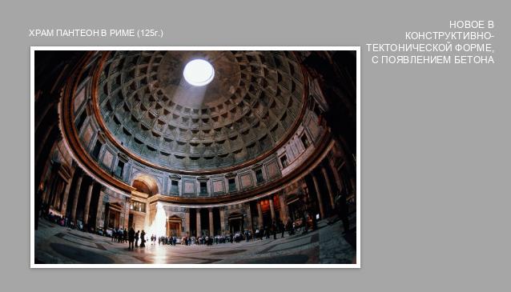
Вступление: «Мы с вами прошли долгий путь от каменных балок Стоунхенджа до идеальных греческих колонн. Но все они были ограничены возможностями камня — перекрывать можно было только небольшие пролеты. На этом слайде мы видим настоящую революцию. Перед нами римский Пантеон (125 г. н.э.). И текст на слайде гласит: «Новое в конструктивно-тектонической форме, с появлением бетона»».
Что изменил бетон? «Римляне изобрели бетон (смесь извести, вулканического пепла и щебня). Это позволило им отказаться от прямых каменных балок и перейти к криволинейным формам — аркам и куполам.
Обратите внимание на эту фотографию. Мы находимся внутри гигантского зала, перекрытого сферой (куполом). Диаметр этого купола — 43 метра! Он оставался самым большим в мире на протяжении 1300 лет. Достичь этого без бетона и понимания законов физики было бы невозможно».
Секреты тектоники Пантеона: «В чем гениальность конструкции?
1. Работа на сжатие: Купол работает как свод. Вес камня и бетона давит вниз, и эта нагрузка идеально передается на круглую стену-барабан.
2. Облегчение веса: Римляне не были дураками. Если бы купол был сделан из одного тяжелого бетона, он бы рухнул под собственной тяжестью. Поэтому они использовали разные заполнители: внизу — тяжелый базальт, а ближе к вершине — легкая пемза.
3. Кессоны: Обратите внимание на квадратные углубления на потолке. Это не только декор. Они уменьшают массу купола, делая его легче.
4. Окулюс: В центре купола — отверстие (окулюс) диаметром 9 метров. Это гениальное инженерное решение. Оно снимает напряжение в самой слабой точке вершины свода. И одновременно это единственный источник света, создающий потрясающий эффект "божественного луча"».
Тектоника и образ: «Греки видели тектонику в колоннах. Римляне увидели тектонику в оболочке. Их архитектура — это не каркас, а массивная пластика внутреннего пространства. Пантеон показывает нам, что архитектура — это не только то, что мы видим снаружи, но и то, как гулко раздается шаг внутри и как свет падает с неба».
Вывод по слайду: «С этого момента (с изобретения бетона и купола) архитектура обрела новую свободу. Она смогла создавать огромные внутренние пространства, где человек чувствует себя внутри искусственной вселенной. Следующим шагом станет каркас из железа и стекла, но это будет уже совсем другая эпоха».
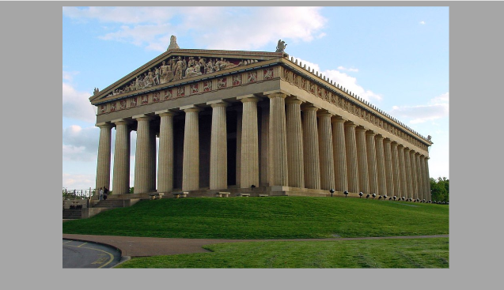
Вступление: «Мы с вами посмотрели на римский Пантеон, где благодаря бетону и куполу здание превратилось в массивную оболочку. Но давайте вернемся немного назад, в Древнюю Грецию. На этом слайде перед нами Парфенон (на фото — его точная реконструкция). Это величайший памятник, который демонстрирует нам абсолют, идеал стоечно-балочной системы в камне».
Тектоника дорического ордера: «Внимательно посмотрите на этот фасад. Мы видим классический дорический ордер.
• Стилобат (основание): на него опираются колонны.
• Колонны: Обратите внимание, как они стоят. Они не имеют баз (подставок), а сразу вырастают из основания. Ствол колонны покрыт вертикальными желобками — каннелюрами. Они создают игру света и тени, визуально делая колонну более стройной.
• Капитель: Простая и суровая, передающая усилие от перекрытия на колонну.
• Антаблемент: Это то, что лежит на колоннах. Он состоит из трех частей: архитрав (несущая балка), фриз (с чередующимися триглифами и метопами) и карниз.
Все эти элементы честно показывают свою работу. Мы видим, как тяжесть крыши передается вниз, на землю».
Гениальные оптические иллюзии: «Почему Парфенон кажется таким совершенным? Секрет в том, что греки не использовали прямых линий. Если бы они построили здание по линейке, оно казалось бы человеческому глазу вогнутым. Поэтому архитекторы использовали оптические поправки.
Колонны Парфенона не стоят строго вертикально — они слегка наклонены внутрь. А основание (стилобат) имеет едва заметную выпуклость. Это гениальная тектоника: конструкция подстраивается под особенности нашего зрения».
Фронтон: «Посмотрите наверх. Треугольная крыша (фронтон) — это не просто декор. Это конструктивная необходимость для отвода дождевой воды. Но греки превратили эту утилитарную форму в главное поле для скульптуры. Внутри этого треугольника (тимпане) размещались скульптурные композиции на мифологические сюжеты».
Вывод по слайду: «Парфенон — это гимн камню и пропорциям. Он доказывает, что даже самая примитивная конструкция (опора и балка) может стать бессмертным шедевром, если довести ее пропорции до идеала. Для нас, дизайнеров, это урок: не обязательно изобретать новые материалы, чтобы создать великое. Достаточно понять логику материала и выстроить его в идеальную гармонию».
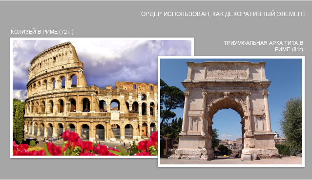
Вступление: «Мы с вами видели, как греки довели до идеала стоечно-балочную систему, где колонна честно держала крышу. А теперь давайте посмотрим на Древний Рим. Текст на этом слайде гласит: «Ордер использован как декоративный элемент». Это означает, что римляне совершили настоящую революцию в тектонике. Они поняли, что настоящую нагрузку могут нести арки и своды, а греческий ордер можно просто "надеть" на фасад, как красивый костюм».
1. Колизей в Риме (Слева): «Перед нами величайший амфитеатр. Посмотрите на его фасад. Мы видим арки внизу и ряды колонн наверху. Но если мы подойдем ближе, то поймем, что колонны здесь не стоят отдельно. Они приставлены к стене (это называется полуколонны или пилястры). Они не несут никакой нагрузки. Весь вес этой колоссальной конструкции распределяют внутренние арки и бетонные стены.
Зачем же нужны эти колонны? Они создают ритм и масштаб. Они визуально облегчают массивную стену. Более того, римляне использовали разные ордера на разных ярусах (внизу — массивный тосканский, наверху — легкий коринфский), чтобы подчеркнуть ярусность здания».
2. Триумфальная арка Тита (Справа): «Второй пример — это триумфальная арка (81 г.). Главный конструктивный элемент здесь — это арка (изобретение этрусков, доведенное до ума римлянами). Арка работает на сжатие и позволяет перекрыть огромный пролет без использования балок. А колонны по бокам арки (тоже приставные) — это чистая декорация. Они служат лишь постаментом для статуй и надписей».
Смена тектонической парадигмы: «Раньше тектоника была честной: мы видели, что стоит и что держит. Римляне же создали архитектуру, где истинная конструкция (арка, бетонная стена) скрыта за фасадом из декоративных элементов (ордера). Это не обман, это новый уровень мышления. Архитектор теперь мог создать огромное внутреннее пространство (как в Пантеоне или Колизее) и при этом украсить внешние стены по всем канонам классической красоты. Именно этот прием — использование ордера как декорации — станет главным для Ренессанса и всей последующей европейской архитектуры».
Вывод по слайду: «Колизей и Арка Тита учат нас важному разделению: есть конструкция (которая обеспечивает прочность), и есть архитектурная форма (которая создает образ). Римляне виртуозно научились комбинировать утилитарную мощь инженерной мысли с эстетикой греческого ордера».
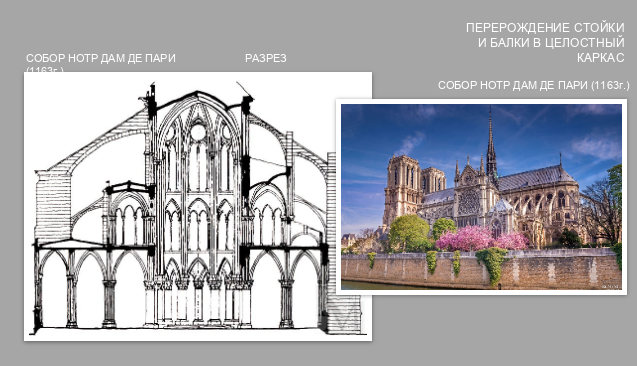
Вступление: «Мы с вами видели, как римляне использовали массивные бетонные стены и арки, а ордер превратили в декор. Следующий гигантский шаг в эволюции тектоники сделали архитекторы Готики. Обратите внимание на заголовок слайда: "Перерождение стойки и балки в целостный каркас". Перед нами Собор Парижской Богоматери (Нотр-Дам де Пари, 1163 г.). И это не просто здание, это гениальная инженерная революция».
Анализ разреза (Левая часть слайда): «Посмотрите на чертеж разреза. Если у греков была простая стойка и балка, то здесь мы видим сложнейшую каркасную систему.
1. Стрельчатая арка: Вместо полукруглой римской арки готика использует заостренную. Она позволяет перенаправлять нагрузку более вертикально, что дает возможность делать здание невероятно высоким.
2. Нервюры: Своды здесь не сплошные. Они собраны из пересекающихся каменных ребер (нервюр). Это и есть «перерожденные» балки, которые несут на себе вес.
3. Аркбутаны: Обратите внимание на эти "мостики" снаружи здания (на чертеже они видны сбоку). Это вынесенные наружу опоры, которые принимают на себя распор от сводов. Стена больше не должна быть толстой, чтобы удерживать крышу!»
Анализ фасада (Правая часть слайда): «А теперь посмотрите на фотографию. Вы видите, как эта конструкция выглядит в реальности. Нотр-Дам кажется ажурным, потому что он и есть ажурный. Каркас стал честной тектонической формой. Снаружи мы видим "ребра" здания — аркбутаны, которые передают колоссальную нагрузку на землю.
Благодаря тому, что стены перестали быть несущими, архитекторы смогли прорезать в них гигантские окна и заполнить их витражами. Свет стал главным строительным материалом наравне с камнем».
Смысл тектоники каркаса: «В чем же принципиальное отличие от античности? Античное здание — это масса (тяжелая, плотная). Готическое здание — это каркас (легкий, прозрачный). Нагрузка теперь передается не по всей плоскости стены, а концентрируется в отдельных точках: от нервюр к колоннам, от колонн к аркбутанам, от аркбутанов к фундаменту. Это торжество инженерного расчета».
Вывод по слайду: «Нотр-Дам — это переломный момент. Стоечно-балочная система, пройдя через арки Рима, превратилась в сложный трехмерный каркас. С этого момента архитектура научилась строить ввысь, не жертвуя при этом прочностью. И именно этот принцип каркаса станет основой для небоскребов XX века».
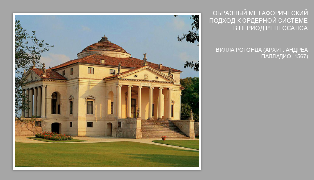
Вступление: «Мы с вами посмотрели на готический каркас, который устремил здания в небо. Но в эпоху Возрождения (Ренессанса) взгляды людей изменились. Человек снова стал центром вселенной, и архитекторы обратили свой взор назад — к античности. На этом слайде изображена Вилла Ротонда (архитектор Андреа Палладио, 1567 г.). И тема этого слайда — «образный метафорический подход к ордерной системе»».
Что значит «метафорический подход»? «Если у древних греков колонна была жестко обусловлена конструкцией (она реально держала крышу), то у Палладио ордер превращается в метафору. Посмотрите на здание. Это жилая вилла для богатого аристократа. Но Палладио приставляет к ней портики (крыльца с колоннами), которые выглядят как фасады древнегреческих храмов.
Зачем? Он создает метафору: дом человека уподобляется храму. Жилое здание приобретает черты божественной гармонии и покоя».
Идеальная тектоника симметрии: «Обратите внимание на композицию. Она абсолютно симметрична. У виллы четыре совершенно одинаковых фасада. В центре — круглый зал, увенчанный куполом (ротонда). Здесь нет главного входа, потому что здание идеально со всех сторон. Это отражение ренессансного представления о том, что божественная гармония — это абсолютный порядок и симметрия».
Связь с античностью: «Палладио использует ионический ордер (обратите внимание на завитки-волюты на капителях). Фронтоны с колоннами опираются на широкие ступени. Здание стоит на холме, доминируя над ландшафтом. Это уже не готика с ее устремленностью вверх. Это античная ясность, горизонтальность и тектоническое спокойствие. Колонны здесь снова реально работают (держат портик), но их главная функция — создать образ».
Вывод по слайду: «Эпоха Возрождения вернула ордеру его структурную честность, но добавила к ней философский смысл. Палладио доказал, что архитектура — это не просто сумма конструктивных элементов. Это язык метафор. Строя загородный дом, он строил образ идеального, гармонично устроенного мира, где человек равен богам».
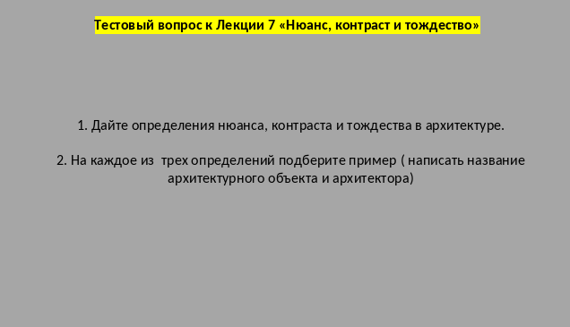
Вступление: «Мы с вами снова возвращаемся к вопросам композиции, чтобы проверить, как вы усвоили материал прошлой лекции. Мы уже знаем, что архитектура говорит с нами через форму и тектонику. Но чтобы эта речь была выразительной, архитекторы используют три важнейших композиционных инструмента: тождество, нюанс и контраст».
Разбор задания: «Ваша задача сейчас — дать определения этим трем понятиям и вспомнить примеры из архитектуры (обязательно называя объект и архитектора)».
Несколько подсказок для аудитории:
Вывод: «Подумайте пару минут и приведите свои примеры. Вспомните те здания, которые мы уже разбирали на лекциях, или приведите свои любимые постройки».
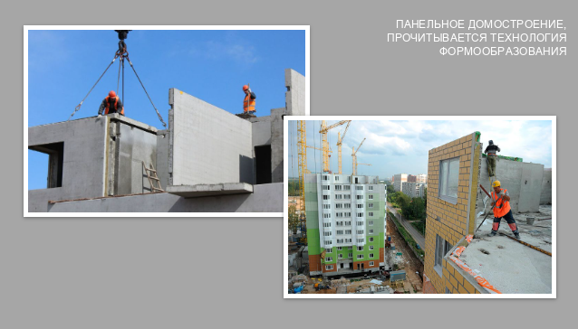
Вступление: «Мы с вами проследили эволюцию от каменных глыб до изящных вилл Ренессанса. А теперь давайте перенесемся в XX век. На слайде написано: «Панельное домостроение, прочитывается технология формообразования». Эти фотографии со стройки отлично иллюстрируют, что в XX веке архитектура перестала быть ремеслом и превратилась в индустрию. Форма здания теперь диктуется заводской технологией».
Тектоника "Коробки": «Посмотрите на левое фото: кран поднимает огромную бетонную плиту. Это не колонна и не балка. Это панель — готовый элемент стены. Панельное домостроение — это метод сборки здания из крупных заводских блоков.
Какую тектонику мы здесь видим? Это тектоника плоскости и монтажа. У здания нет сложного каркаса. Нагрузку несут сами стены-панели. Форма здания предельно утилитарна: это простая коробка, потому что из плоских прямоугольных плит очень сложно (и дорого) собирать изогнутые или скульптурные формы».
Технология диктует форму (Формообразование): «Обратите внимание на правое фото. Мы видим, как дом растет этаж за этажом. Строители просто "собирают" его, как конструктор. Тектоническая выразительность таких зданий строится на швах и стыках между панелями. Это честная архитектура: мы сразу видим, из чего она сделана и как смонтирована.
Именно эта технология породила облик спальных районов по всему миру (вспомните хрущевки и брежневки). Она была гениальна в своей экономичности и скорости, но полностью убила индивидуальность. Архитектор здесь был ограничен размером заводской формы».
Связь с тектоникой: «Панельное домостроение — это идеальный пример того, как материал и метод производства определяют форму. Мы не можем использовать ордер или готические своды с этой технологией. Панели диктуют прямоугольную геометрию, строгую сетку и лаконичность. Это архитектура, где эстетика уступила место функции и скорости».
Вывод по слайду: «Панельное домостроение — это важнейший этап в эволюции конструктивных систем. Оно решило проблему массового жилья, но поставило перед архитекторами новую задачу: как сделать типовую, собранную из одинаковых панелей коробку — визуально интересной, человечной и непохожей на миллионы других таких же коробок?».
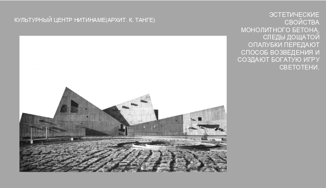
Вступление: «Мы только что посмотрели на панельное домостроение, где форма была продиктована заводскими стандартами. А теперь давайте посмотрим на противоположный подход, который произвел революцию в XX веке. Перед нами Культурный центр Нитинаме в Японии (архитектор Кендзо Танге). И здесь мы видим торжество монолитного бетона».
Что значит «монолитный» и при чем тут опалубка? «В отличие от панелей, которые привозят на стройку готовыми, монолитный бетон заливают прямо на месте. Для этого строители собирают деревянную форму — опалубку. Когда бетон застывает, опалубку снимают. И вот тут вступает в силу текст на слайде: «Следы дощатой опалубки передают способ возведения и создают богатую игру светотени». Для архитекторов этого направления (брутализма) следы от досок на бетоне — это не брак, а украшение. Это честная тектоника. Бетон не скрывает, как его создали. Он показывает фактуру дерева, оставившего на нем свой отпечаток».
Эстетика сурового материала: «Посмотрите на фотографию. Здание состоит из острых углов, огромных наклонных плоскостей и грубых, необработанных стен. Здесь нет ни колонн, ни ордера, ни декора. Красота рождается из самой геометрии и веса материала. Бетон здесь работает как скульптура. Он тяжелый, мощный и монументальный. Архитектор намеренно оставляет его "голым", чтобы подчеркнуть первозданную силу конструкции».
Игра света и тени: «Из-за того, что поверхность бетона не гладкая, а имеет рельеф (следы досок), свет падает на нее неравномерно. В течение дня, когда солнце движется, здание меняет свой облик. Грубая фактура создает глубокие, выразительные тени, которые подчеркивают пластику формы».
Вывод по слайду: «Этот слайд показывает важнейший сдвиг в тектонике XX века. Если древние римляне скрывали бетон под штукатуркой и мрамором, а строители панельных домов делали его плоским, то мастера XX века (как Кендзо Танге) обнажили материал. Они доказали, что сам процесс строительства, фактура материала и его вес могут быть главными художественными средствами».
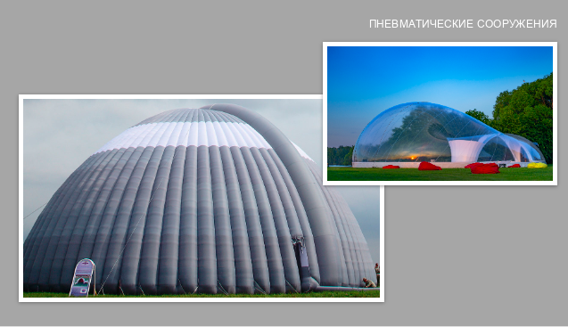
Вступление: «Мы с вами прошли долгий путь: от тяжелых каменных блоков до брутального монолитного бетона. И теперь мы подошли к самому радикальному и легкому решению в истории архитектуры — пневматическим сооружениям. Посмотрите на эти фотографии. Кажется, что эти здания не стоят на земле, а парят, готовые в любой момент улететь. И это недалеко от истины».
Что такое пневматическая конструкция? «В отличие от всех предыдущих систем, здесь нет ни колонн, ни балок, ни несущих стен. Форма здания создается и поддерживается за счет избыточного давления воздуха внутри оболочки.
Тектоника здесь абсолютно уникальна. Если камень работал на сжатие, а металл и бетон на изгиб, то ткань (или полимерная пленка) этих сооружений работает исключительно на растяжение. Воздух равномерно давит на оболочку изнутри, придавая ей идеально выпуклую форму (сферу, свод, цилиндр)».
Разбор примеров на слайде:
Тектоника будущего: «Пневматические конструкции полностью меняют наше представление о здании. Оно перестает быть статичным, "капитальным". Оно становится мобильным, трансформируемым. Такое здание можно сложить, перевезти в другой город и снова надуть. Материал диктует форму: минимальный вес, максимальный объем, эстетика "натянутой пленки" и мягких, обтекаемых линий».
Вывод по слайду: «Эволюция конструктивных систем — это история того, как человечество училось преодолевать силу тяжести. Мы начали с того, что ставили тяжелый камень на камень. А закончили тем, что научились строить целые дворцы из воздуха. Пневматические сооружения — это вызов традиционной архитектуре и наглядный пример того, что в дизайне среды нет предела для легкости».
Вступление: «На этом наша лекция подходит к концу. Сегодня мы с вами проделали колоссальный путь: от первобытных мегалитов и греческих ордеров до готических каркасов, брутального бетона и надувных пневматических конструкций. Мы увидели, как тектоника — то есть правдивое выражение работы конструкции и материала — на протяжении тысячелетий формировала облик нашей среды обитания».
Завершающее слово: «Помните главный вывод: архитектура — это не просто красивые картинки. Это всегда баланс между замыслом архитектора, физикой материалов и законами гравитации. Понимание конструктивной логики — это то, что отличает профессионального дизайнера архитектурной среды от простого декоратора. Надеюсь, этот материал поможет вам в ваших будущих проектах».
Контакты: «На экране вы видите информацию об авторе лекции и официальный контакт кафедры дизайна архитектурной среды. Если у вас возникли вопросы по сегодняшней теме, по предыдущим лекциям или по вашим учебным проектам, вы можете обратиться по указанному адресу электронной почты. Спасибо вам за внимание и плодотворную работу!»